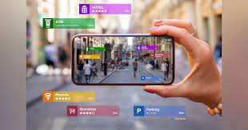

Emerging Technology
The word "emerging technology" is typically used to describe a new technology, but it can also refer to the ongoing evolution of an existing technology. When used in different contexts, such as in the media, business, science, or educational fields, it can have slightly different meanings.
Technology and Ethics
Technology ethics is the application of ethical thinking to the practical concerns of technology.
Artificial Intelligence
The replication of human intelligence functions by machines, particularly computer systems, is known as artificial intelligence. Expert systems, natural language processing, speech recognition, and machine vision are some examples of specific AI applications.

Internet of Things
The network of physical items, or "things," that are implanted with sensors, software, and other technologies for the purpose of communicating and exchanging data with other devices and systems through the internet is referred to as the Internet of Things (IoT).
Augmented Reality
A computer-generated perception of the real world is enhanced through an interactive experience called augmented reality. Augmented reality uses software, apps, and hardware like AR glasses to superimpose digital material over actual settings and objects.
Data Science
Data science is the study of data with the goal of gaining important business insights. It is a multidisciplinary method for analyzing massive volumes of data that integrates ideas and techniques from the domains of mathematics, statistics, artificial intelligence, and computer engineering.
Nanotechnology
Nanotechnology is the process of modifying matter at a size close to the atomic level to create novel structures, materials, and gadgets. The technique offers advances in science across a wide range of industries, including manufacturing, consumer goods, energy, and medical.
Cloud and Quantum Computing
Cloud computing is a means of networking remote servers that are hosted on the Internet.